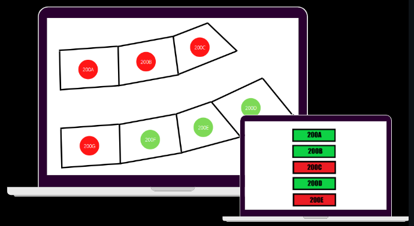

Live Block Reservation
Informations :
Ce projet a été réalisé durant le workshop
de rentrée de l'EPSI. Avec mon groupe, comprenant
5 personnes nous avons cherché un besoin que les
étudiants pouvaient rencontrer sur leur campus.
Nous avons donc choisi de simplifier la réservation
des salles. Nous avons travaillé 5 jours pour réaliser
un site web hébergé sur un Raspberry PI.
Le Projet :
Live Block Reservation est un site web
permettant de réserver des salles au
sein d’un campus EPSI/WIS. Il est relié à
un serveur hébergé sur un Raspberry Pi.
Il suffit simplement de se connecter au
site et cliquer sur le nom d'
une salle
pour pouvoir la réserver. Quand une
salle apparaît en rouge, elle est déjà
occupée. Quand elle est en vert, la salle
est libre et disponible. Pour l’instant, 7
salles sont renseignées mais il est
possible de modifier le code source
pour pouvoir l’adapter à tous les
campus. C’est pourquoi les fichiers sont
open source. De plus, le site est
responsive. Il est donc possible d'
y
accéder sur un ordinateur ou sur un
smartphone.
Les problèmes à résoudre :
A l’EPSI, des salles sont mises à
disposition des étudiants et des
professeurs pour pouvoir travailler en
groupe. Cependant, ils sont obligés de
venir au campus pour pouvoir les
réserver. Grâce à Live Block
Reservation, cela ne sera plus un
problème car ils pourront avoir le
contrôle depuis chez eux. De plus, s
' ils
ne pensent pas à réserver, ils pourront
voir en temps réel si la salle est
occupée ou non et si c’est le cas,
jusqu’à quand. Le site web va donc
permettre aux étudiants et aux
professeurs de mieux s’organiser en
fonction de leurs cours et ils pourront
travailler en groupe dans un
environnement de travail calme et
apte à la réflexion.
Maquette du projet :
